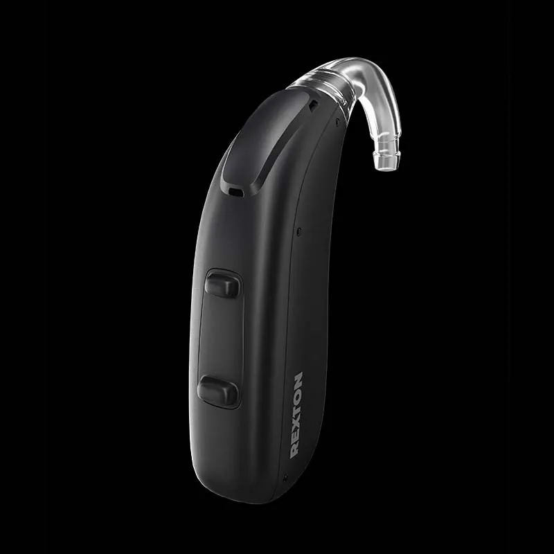
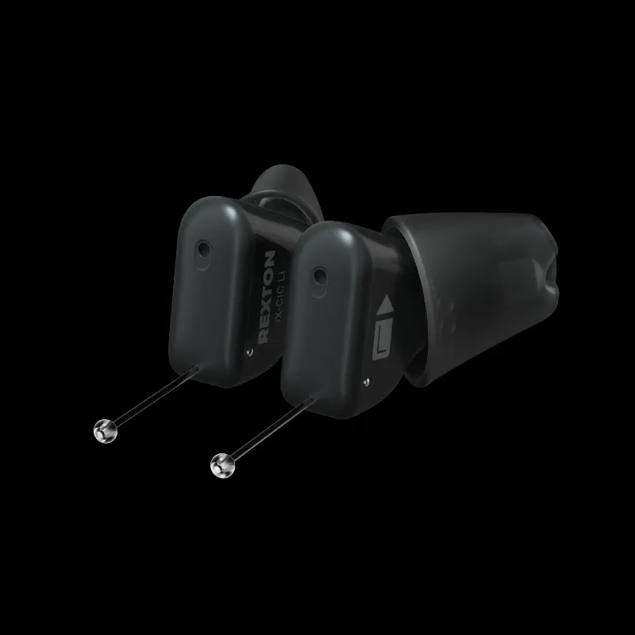
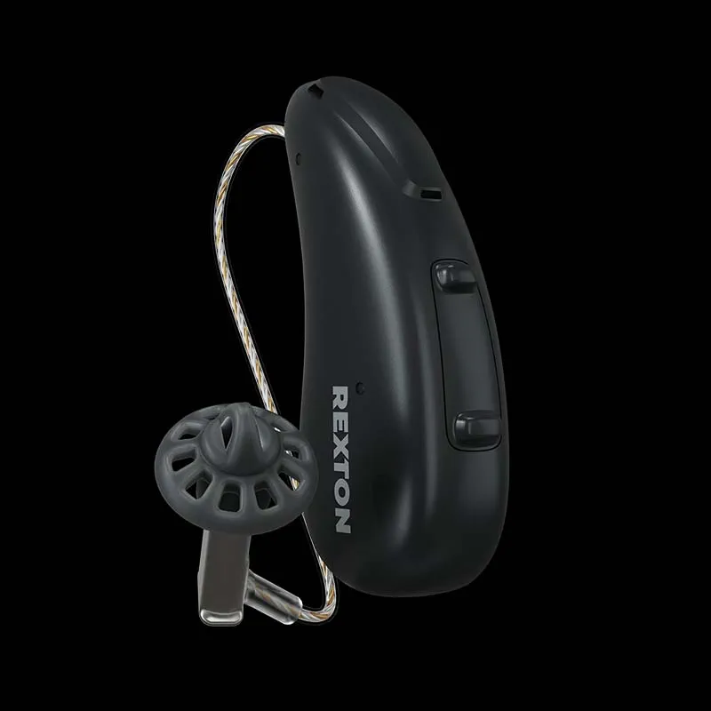

Volte a ouvir os sons que você ama.
Aparelhos auditivos modernos e discretos, com atendimento especializado em Porto Alegre.
Especialistas em saúde auditiva · Porto Alegre/RS
Sente dificuldade para ouvir?
Sinais comuns de perda auditiva
- Pede para repetirem o que foi dito
- Aumenta sempre o volume da TV
- Tem dificuldade em ambientes com ruído
- Sente zumbido ou desconforto auditivo
Aparelhos para o seu dia a dia
Discretos, modernos e adaptados à sua rotina.
Discretos
Quase imperceptíveis no uso
Recarregáveis
Carregou de noite, esqueceu o problema
Conectividade
Ouça as ligações direto no aparelho
Tecnologia Rexton
Mais clareza nas conversas
Linha Rexton



Como funciona o atendimento
- 1
Contato
Fale com a gente pelo WhatsApp
- 2
Avaliação
Entendemos sua necessidade
- 3
Indicação
Sugerimos o aparelho ideal
- 4
Acompanhamento
Suporte contínuo na adaptação
Cuidado, tecnologia e atendimento próximo
Clínica especializada em saúde auditiva em Porto Alegre, com foco em aparelhos auditivos, audiometria e acompanhamento contínuo.
Responsável técnica: Cintia Ourique e Silva — Fonoaudióloga (CRFª 8673-7)
Quem passou pela Bellosom recomenda
Antes eu não ouvia direito o que as pessoas falavam e trocava as palavras. Agora ouço bem, e o atendimento é muito bom.
— Neiva Oliveira
Cheguei depois de dez anos sem ouvir e saí com uma vida nova, ouvindo e vivendo melhor com minha família e comigo mesmo.
— Carlos André
Atendimento incrível, pontual e ágil. Profissionais muito atenciosos. Fiquei extremamente satisfeito com todo o processo.
— Matheus Camargo
Atendimento muito bom. Melhorou meu zumbido, que incomodava há anos.
— Luiza Carolina Paim Machado
Estamos em Porto Alegre
Av. Assis Brasil, 3768 (Esquina Bogotá)Jd. Lindóia — Porto Alegre/RS — CEP 91010-003
(51) 3126-5001
Perguntas frequentes
Como saber se preciso de aparelho auditivo?
Se você pede para repetirem frases ou aumenta o volume da TV com frequência, vale fazer uma avaliação auditiva.
Qual o melhor aparelho auditivo para mim?
Depende do seu grau de perda e da sua rotina. Por isso fazemos uma avaliação individual antes de indicar o modelo.
Existem aparelhos auditivos discretos?
Sim, há modelos compactos e praticamente imperceptíveis no dia a dia.
Aparelho auditivo ajuda em casos de zumbido?
Em muitos casos sim, principalmente quando o zumbido está relacionado à perda auditiva.
Quanto custa um aparelho auditivo?
O investimento varia conforme o modelo e a tecnologia. Solicite um orçamento personalizado com a nossa equipe.
Preciso fazer exame antes de escolher o aparelho?
Sim, a audiometria ajuda a identificar o tipo e o grau da sua perda auditiva.
A Bellosom fica em Porto Alegre?
Sim, na Av. Assis Brasil, 3768, no bairro Jardim Lindóia.
Como faço para falar com a equipe?
Pelo WhatsApp — é o jeito mais rápido de falar com a Bellosom.
Dê o primeiro passo para ouvir melhor
Fale com a Bellosom e receba orientação especializada.